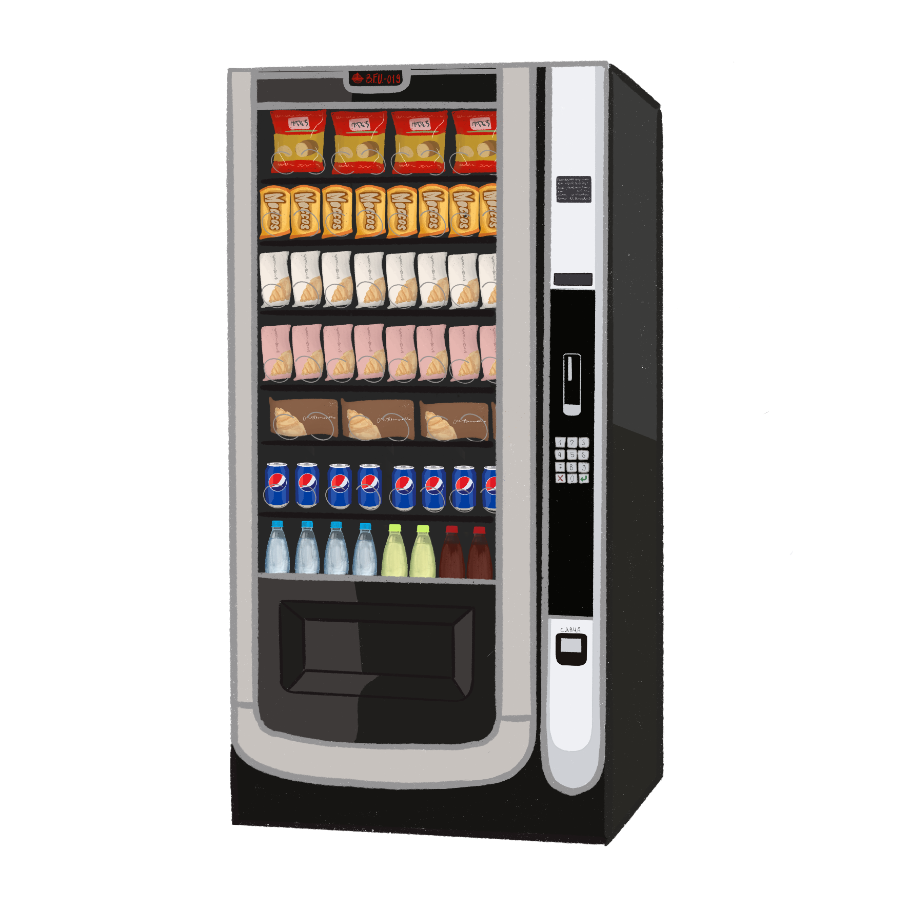

*Название аномалии*
Описание аномалии
B.F.U.-019 появился на первом этаже корпуса Фонда ██ октября 2022 года. Объект выглядит точь-в-точь как вендинговый аппарат фирмы «██████». С определённой долей вероятности B.F.U.-019 «Торговый автомат» может принести вред гражданскому лицу, посредством изъятия денежных средств без обмена на товары, однако также способен выдать удачливому покупателю больше нужного (сохраняет баланс между «невыдачей» и «бонусом» в отношении 1:1). Было выявлено, что "Торговый автомат" не имеет каких-либо проблем с программным обеспечением, механически он также успешно работает. Еда в аппарате появляется сама собой, попытки выяснить, каким образом это происходит, посредством наблюдения за объектом через камеры ни к чему не привели – товары в нём появляются подобно тому, как сам B.F.U.-019 материализовался в холле корпуса Фонда. Стал объектом вследствие участившихся случаев с лаборантами, оставшимися без обеда. Объект получил класс Ограниченные в связи с опасностью, заключающейся в возможной потере денежных средств при попытке что-либо купить в "Торговом автомате".
Особые условия содержания
На данный момент объект хранится в своём исходном месте. С момента появления попыток побега либо перемещения куда-либо не предпринимал, иных аномалий помимо денежных махинаций за B.F.U.-019 замечено не было.